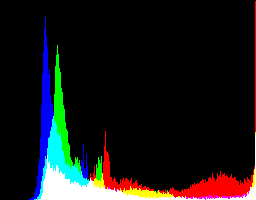
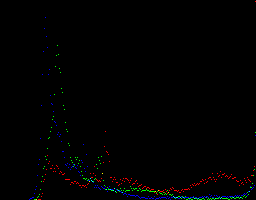

Minimum unique abbreviation of option is acceptable. You may use double hyphens instead of single hyphen to denote options. You may use white space in place of the equals sign to separate an option name from its value.
This program is part of Netpbm.
pnmhistmap reads a PNM image as input and produces an image showing a histogram of the color (or gray) values in the input. A PGM input results in a PBM output. A PPM input results in a PPM output with three overlaid histograms: a red one for the red input, a green one for the green input, and a blue one for the blue input.
For example, from the following image produces the following histogram:

If the input is PBM, pnmhistmap produces an error message and no output image.
These options are meaningless if the input is PGM.
These options were new in Netpbm 10.26 (January 2005). Before that, pnmhistmap always included all three color components.
Example of dots: 
This option was new in Netpbm 10.26 (January 2005). Before that, pnmhistmap always plotted bars.
By default, pnmhistmap plots the entire possible range: zero to the maxval.
These options were new in Netpbm 10.26 (January 2005). Before that, pnmhistmap always plotted from zero to the maxval.
The default height is 200 pixels.
The default width is one pixel for each plotted intensity value (so it's controlled by the maxval of the image and the -lval and -rval options). The "count buckets" in the histogram are always one pixel wide. If you specify a width less than the number of plotted intensity values, a bucket represents more than one intensity value. If you specify a width greater that the number of plotted intensity values, some buckets represent no color (the count is zero).
This option was new in Netpbm 10.26 (January 2005). Before that, the dimensions were always what the default is today.
The -black and -white options, which can be used separately or together, are useful for images with a large percentage of pixels whose value is zero or 255, which can cause the remaining histogram data to become unreadbaly small. Note that, for pixmap inputs, these options apply to all colors; if, for example, the input has a large number of bright-red areas, you will probably want to use the -white option.
pnmhistmap assumes maxval is always 255. Images with a smaller maxval will only use the lower-value side of the histogram. You can overcome this either by piping the input through pnmdepth or by cutting and scaling the lower-value side of the histogram. Neither is a particularly elegant solution to the problem.
The program does not allow you to specify the output size.
Wilson H. Bent. Jr. (whb@usc.edu).